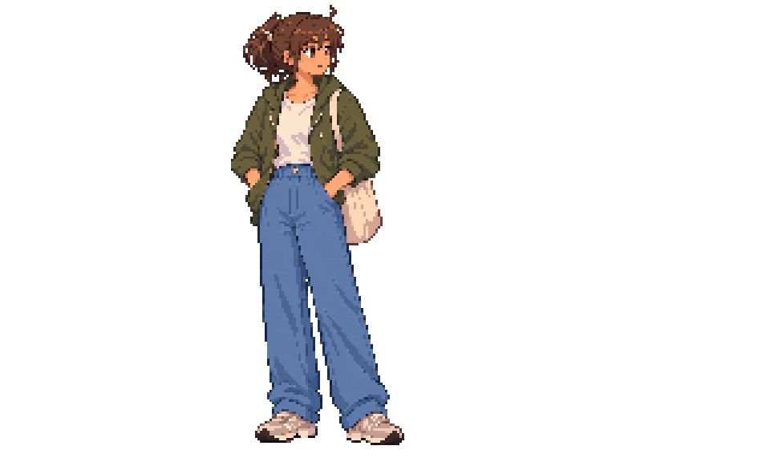

13 frames · 1.68 seconds · same native grid · user artistic review pending. Proportions, tote handling and recovery grips repaired across the cycle. Stance transitions and the restrained head movement still need your playback judgment.
Native-size loop · Duration contact sheet · Key comparisons · Editable native · Evidence and limits

Both panels use the same320×192canvas at2×. No per-pose fitting. Native endpoints are exact neutral. Technical replay and Godot checks do not establish artistic approval.